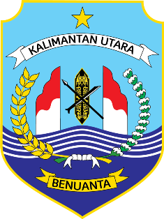
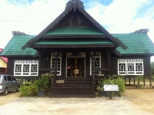
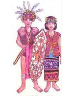
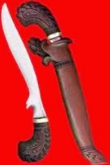
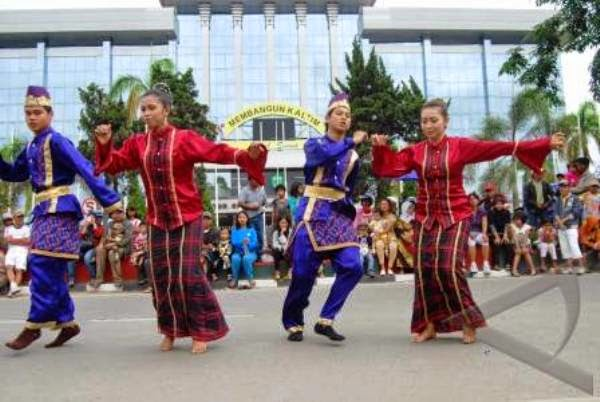
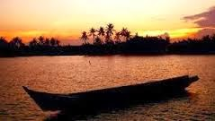
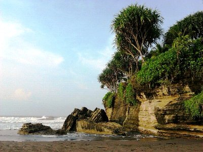
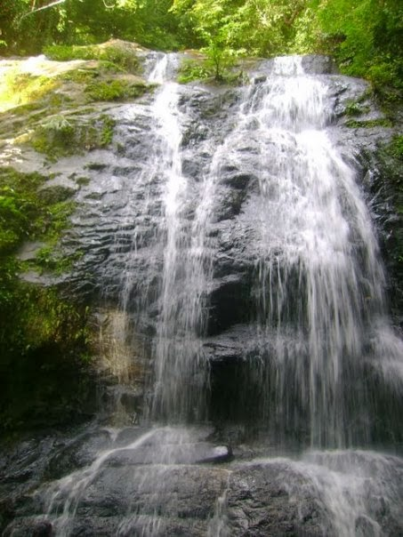
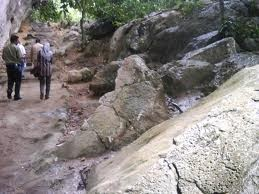
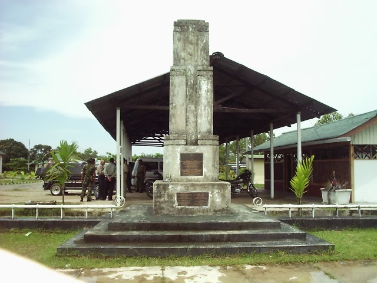

KALIMANTAN UTARA
 Kalimantan Utara
Kalimantan Utara adalah sebuah provinsi di Indonesia yang terletak di bagian utara Pulau Kalimantan. Provinsi ini berbatasan langsung dengan negara tetangga, yaitu Negara Bagian Sabah dan Serawak, Malaysia Timur.Saat ini, Kalimantan Utara merupakan provinsi termuda Indonesia, resmi disahkan menjadi provinsi dalam rapat paripurna DPR pada tanggal 25 Oktober 2012 berdasarkan Undang-undang Nomor 20 Tahun 2012.
Rumah Adat

Rumah Baloy merupakan rumah adat yang terkenal dari masyarakat Kalimantan Utara. Bentuk bangunan rumah adat ini terlihat lebih modern dan modis karena hasil pengembangan arsitektur Dayak dari Rumah Panjang (Rumah Lamin) yang dihasilkan oleh Masyarakat suku Tidung yang tidak lain merupakan suku di Kalimantan Utara. Seperti suku lainnya, suku Tidung ini mempunyai kebudayaan dan model rumah adat sendiri.
Pakaian Adat

Pakaian adat Kalimantan Utara dengan pria mengenakan rompi tanpa lengan serta dililitkan kain hingga selutut. Dikepala dikenakan topi berhiaskan bulun burung, serta wanita menegnakan rompi yang bercorak khas Kalimantan tanpa lengan serta bagian bawahnya rok. Dikepalanya dihiasi topi yang unik.
Senjata Tradisional

Mandau
Senjata Mandau merupakan senjata pusaka tradisional suku Dayak, berupa pusaka turun temurun yang dianggap keramat.
Alat Musik
.png)
Babun
.png)
Gambang
Tarian Daerah

Tari Jepen
Suku dan Bahasa
Suku Bangsa: Sepertiga penduduk Kalimantan Utara adalah Suku Jawa yang merupakan kelompok terbesar, disusul penduduk asal Sulawesi Selatan. Selebihnya merupakan penduduk asli Kalimantan yaitu Suku Banjar, Suku Bulungan, Suku Dayak, Suku Tidung dan Suku Kutai. Bahasa yang dipakai oleh orang Kalimantan Utara: Bahasa Indonesia, bahasa Tidung, Bahasa Dayak.
Wisata
Sungai Nyamuk
 Lihat Peta{kind=link}
Sungai Nyamuk merupakan salah satu kelurahan yang berada di kecamatan Sebatik Timur, di Kabupaten Nunukan, Kalimantan Timur, Indonesia. Di Sungai Nyamuk ini sebagian besar penduduk dan masyarakat bekerja dan berprofesi sabagai petani yang menggarap tanaman lada dan coklat. Di Daerah Sungai Nyamuk ini terkenal sebagai penghasil lada dan coklat dari kalimantan utara.
NB: Jika ingin ke sungai nyamuk harus menaiki pesawat ke nunukan, dari situ naik kendaraan umum sekitar 7 KM.
Pantai Batu Lamampu
 Lihat Peta{kind=link}
Pantai Batu Lamampu merupakan sebuah wisata pantai yang terletak di Kecamatan Sebatik, di Kabupaten Nunukan, Provinsi Kalimantan Timur. Indonesia. .
NB: Jika ingin ke pantai batu lamampu harus menaiki pesawat ke nunukan, baru menaiki kendaraan umu sekitar 8 KM dari bandara.
Gunung Rian
 Lihat Peta{kind=link}
Gunung Rian berada di Kecamatan Sesayap yang dihiasi air terjun yang indah mengalir sepanjang tahun. Kelebihannya dari wisata air terjun ini memiliki ketinggi + 90 m sampai ke puncaknya, air terjun ini terdiri dari beberapa umpakan. Setiap umpakan terdiri atas + 20m mendatar dan 20 m meninggi.
NB : Jika ingin ke gunung rian harus naik pesawat ke daerah nunukan, lalu naik boat ke tidung, dari sana tidak jauh sekitar 5 KM dari pelabuhan tidung.
Gunung Putih
 Lihat Peta{kind=link}
Obyek Wisata Gunung Putih di Kabupaten Bulungan Gunung Putih merupakan salah satu desa yang berada di kecamatan Tanjung Palas, Bulungan, Kalimantan Utara, Indonesia. Gunung Putih adalah wisata alam gunung kapur yang berwarna putih. Gunung mempunyai keindahan yang alami dengan memiliki relief-relief seperti pahatan seorang seniman di gunung kapur. Gunung Putih mempunyai panorama alam yang indah dan menakjubkan.
NB : Jika ingin ke gunung putih dari pusat kota tinggal menaiki angkutan umum, sekitar 2 KM sampai ditujuan.
Monumen Australia
 Lihat Peta{kind=link}
Di Kota Tarakan ada Monumen Australia yang berada di Jl. Pulau Kalimantan. Monumen ini merupakan simbol perjuangan tentara Australia yang turut membantu dalam upaya pembebasan Tarakan dari pendudukan Jepang. Dahulunya bangunan ini adalah merupakan tanda masuk ke Pemakaman 225. Pemakaman ini merupakan tempat dikuburkannya tentara Australia yang tewas dalam peperangan. Pada tahun 1946 pemakaman ini dipindahkan ke Pulau Labuan di Malaysia Timur. Namun karena banyak wisatawan dari Australia yang masih sengaja datang ke Tarakan untuk berziarah, sehingga bangunan Monumen Australia dibiarkan tetap ada sampai sekarang.
NB : Dipusat kota tarakan, tidak jauh dari kantor walikota tarakan